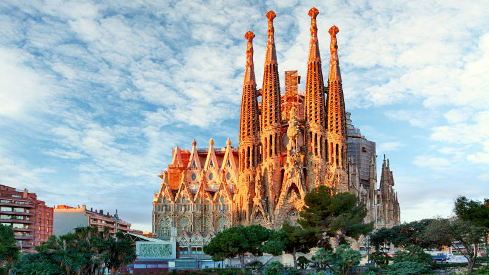
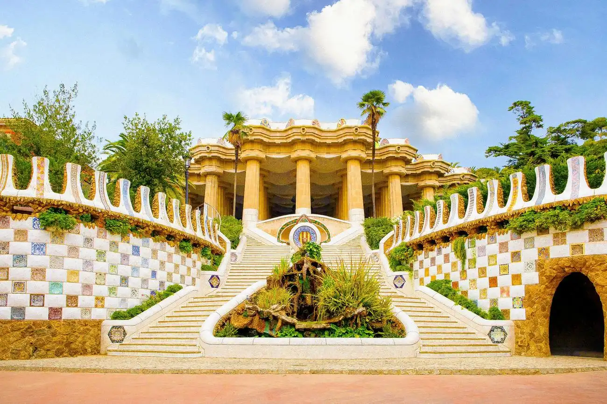
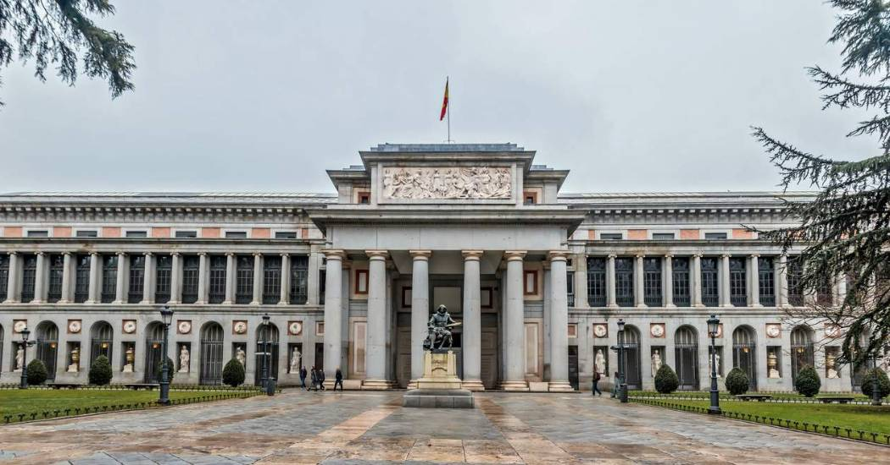
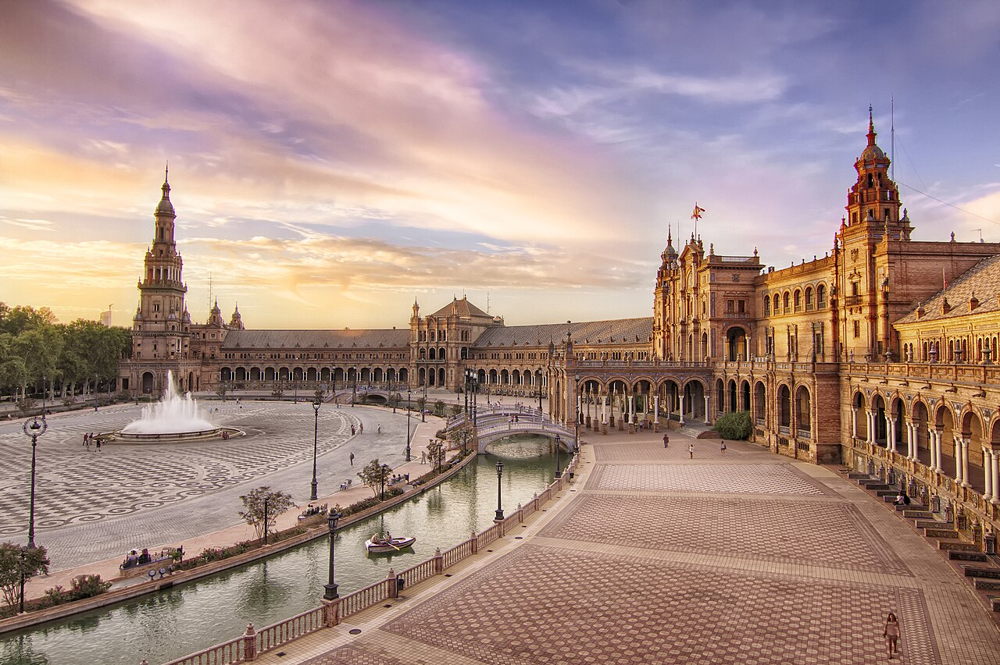
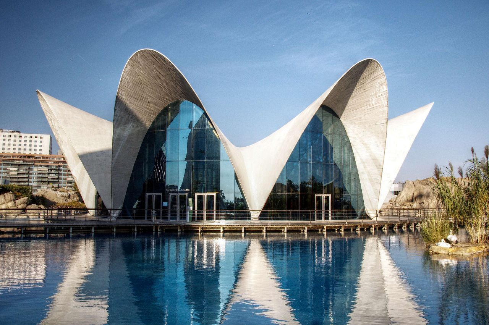
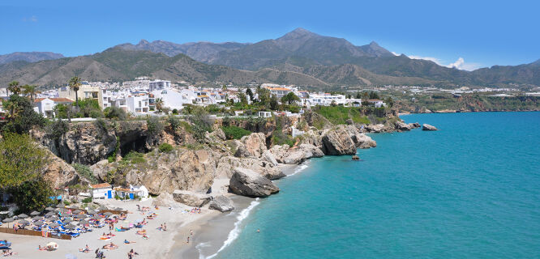
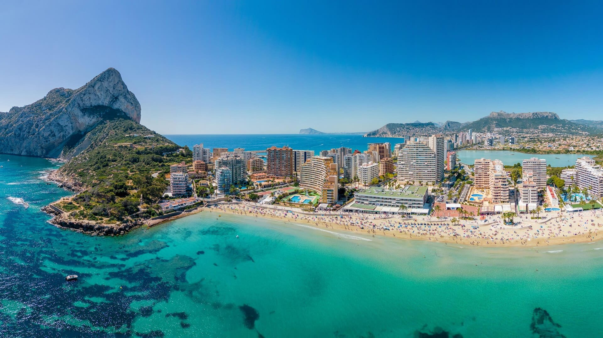
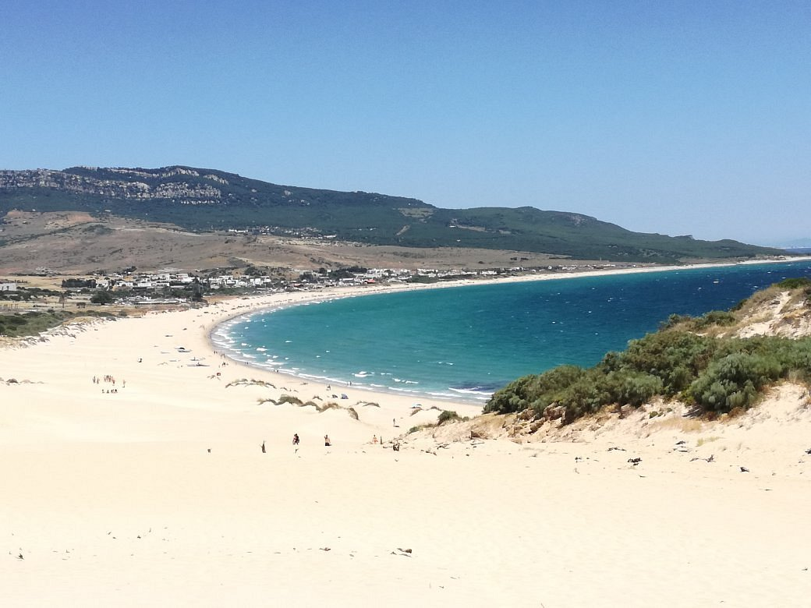

Látványosságok
Spanyolország rendkívül gazdag és sokszínű turisztikai kínálattal rendelkezik. A látogatók egyszerre találkozhatnak művészeti értékekkel, változatos tájakkal, ami Spanyolországot az egyik legvonzóbb úti céllá teszi Európában.
-
Sagrada Familia: Antoni Gaudí híres temploma Barcelonában, amely egyedülálló építészeti stílusáról ismert.
A bazilika Spanyolország egyik legismertebb jelképe és a világ egyik legkülönlegesebb látványossága.

-
Güell park: Különleges, színes mozaikokkal díszített park Barcelonában, amelyet Antoni Gaudí tervezett.

-
Prado Múzeum: Madrid egyik leghíresebb múzeuma, amelyben számos világhírű festmény található.
Spanyolország kulturális örökségének egyik legkiemelkedőbb őrzője.

-
Plaza de Espana: Sevilla egyik leglátványosabb tere, amely félkör alakú épületéről és díszes csempéiről ismert.
A tér Spanyolország tartományait jelképező mozaikokkal van díszítve.

-
Oceanográfic: Európa egyik legnagyobb akváriuma, amely Valenciában található.
Különböző tengeri élővilágokat mutat be.

Spanyolország tengerpartjai rendkívül változatosak, és az ország egyik legnagyobb turisztikai vonzerejét jelentik. Az enyhe éghajlat és a hosszú nyári szezon miatt egész évben népszerű úti célt jelentenek.
-
Costa del Sol: Spanyolország déli részének híres tengerparti szakasza, amely egész évben kellemes, napos időjárásáról ismert.

-
Costa Brava: Spanyolország északkeleti részén, Katalóniában található, vad sziklás partok, kristálytiszta víz és festői öblök jellemzik.

-
Costa Blanca: Spanyolország délkeleti partvidéke, amely több mint 200 km hosszan húzódik, homokos strand és enyhe klíma jellemzi.

-
Costa de la Luz: Az Atlanti-óceán mentén húzódik, híres a hosszú, aranyhomokos strandjairól és a szeles időjárásról, ami ideálissá teszi szörfözésre.
